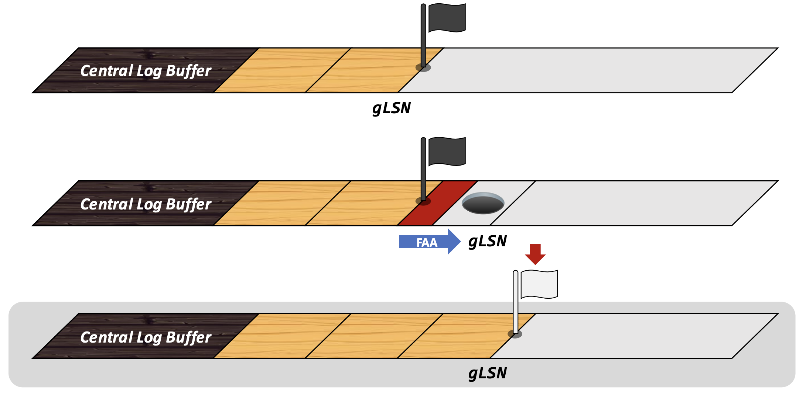

원본 논문
- 이 글은 Border-Collie: A Wait-free, Read-optimal Algorithm for Database Logging on Multicore Hardware (SIGMOD’19) 논문을 읽고 정리한 글입니다.
- 별도의 명시가 없으면, 본 논문에서 그림을 가져왔습니다.
Problem Statement and Key Idea
- Eleda 논문에 이어서, logging system 을 설계함에 있어서 가장 어려운 부분은 LSN 을 할당받았지만 아직 log copy 가 다 안끝나 flush 할 수 없는 부분 (Hole) 을 어떻게 찾을것이냐 였다.
- 이에 대해 Eleda 에서는 min-heap 을 이용해 log copy 가 끝난 LSN 들에 대해 연속성을 확인하는 방법을 사용했더라.
- Border-Collie 에서는 양의 맨 뒤를 쫒는 양치기견 보더콜리 처럼, 가장 작은 LSN 을 가지는 DB thread 를 추적한다.
- 즉, DB thread 전체를 한번 쭉 scan 한 다음 가장 작은 LSN 을 고르게 된다면 이 이전까지는 무조건 hole 이나 overlap 도 없고 LSN 순서대로 깔끔하게 log copy 가 되어 있을 것이기에 이놈을 border-collie 가 단 한번의 간단한 scan 으로 추적해 SBL 로 설정해 flush 하게 되는 것이다.
Naive Approach
- 나문희 불여일견. 아래처럼 border-collie 가 추적한다는 것이다.
- 일단 LSN 은 위 그림과 같은 layout 을 가지게 된다.
- MSB 하나를 flag 로 사용하고, 8byte (long) 을 기준으로 나머지 63bit 를 LSN 으로 사용하게 된다.
- 이때 위 그림처럼 DB thread (양) 은 FAA 으로 LSN 공간을 할당받고 (
mylsn),
- 그 공간에 자신의 log 를 넣은 다음,
- LSN + 로그의 길이의 위치에다가 log copy 가 다 끝났다는 뜻으로 flag 를 박아놓는다.
- 그리고 다른 thread 가 두개 더 와 위 그림처럼 하나는 다 끝났다고 한다면 이렇게 hole 이 하나 생길 것이다.
- 다음 border-collie 가 등장해 모든 worker 들을 다 스캔해서 가장 작은 flag 의 위치를 찾아낸다. 그럼 이 위치가 RLB 가 되어 여기까지 flush 를 하게 된다.
Handling Idle Worker
- 근데 위의 방법은 한가지 문제가 있다.
- Worker 가 flag 를 꽂은 뒤에는 저것을 뽑는 것은 border-collie 가 하는게 아니다.
- 왜냐면 말이 flag 이지 이것은 worker state 에 있는 LSN 이기 때문에, commit 혹은 abort 되어 worker 가 없어지거나 아니면 worker 가 새로운 LSN 을 할당받지 않는 한 이 값이 바뀌지 않을 것이기 때문이다.
- Border-collie 가 직접 이 worker state 를 손대서 뭐 LSN 을 max 로 해놓는 등의 작업을 할 수도 있겠지만 worker 와 border-collie 간의 write-write conflict 를 막기 위해 border-collie 는 이 worker 의 LSN 에 손을 못대도록 해놓았으리라.
- 근데 위 그림처럼 이상태로 worker 가 idle 해져버리거나, 아무짓도 안하게 되면 그냥 계속 저기 flag 가 꽂혀있는 상태로 남아있을 것이고, 따라서 border-collie 는 더 이상 전전하지 못한다.
- 이 문제를 해결하고자, Black-White flag 를 사용하게 된다.
- 우선 thread 는 시작할 때, Black flag 를 꽂아둔다.
- 그리고 FAA 로 LSN 을 받은 다음
- 그 자리에 log copy 를 하고
- 다 됐으면 Black flag 를 White flag 로 바꾼다.
- 그래서 두놈이 같이 오면 같은 자리에 Black flag 가 두개 꽂히게 된다.
- 이후 시간이 지나 한놈은 먼저 저만치 갔다고 해보자.
- 그럼 일단 Black flag 에 대해서는, 아직 worker 가 여전히 작업중이라는 것이므로 RLB 은 여기를 넘지 못한다.

- 그럼 만약네 이놈이 White flag 이면 이놈을 skip 해야 하는데, 어디까지 skip 해야 할까? 여기서 Cutoff flag 가 등장한다.
- 위 그림처럼, Border-Collie 는 처음 시작할 때 현재 global LSN counter 를 cutoff 지점으로 지정해 놓는다. 그리고, Border-Collie 가 가면서 만나는 White flag 는 이 cutoff 와의 최대지점으로 치환된다.
- 이것이 저 오른쪽 위의 코드의 내용이다.
else if (w.flag.color == WHITE)
RLB = min(max(cutoff, w.flag), RLB)- 보면, White flag 일 때는 cutoff 와 flag 가 있는 LSN 와의 최대값과, 현재 RLB candidate 와의 최소값으로 RLB 가 갱신된다는 것을 알 수 있다.
- 이 말은 만약 cutoff 보다 앞에 White flag 가 있으면, 이놈은 cutoff 으로 치환되어서 RLB 가 계산된다는 것이고, 아니면 white flag 위치로 RLB 가 계산된다는 것이다.
- 즉, 이 cutoff flag 는 white flag 에 대한 skip boundary 가 된다. 그래서 만약 white flag 가 cutoff 앞에 있으면, cutoff 지점에 이 white flag 가 세워진 셈이 되는거고, 만약 그렇지 않다면 원래 white flag 가 있던 자리를 기준으로 생각하게 된다 1.
Protocol Summary
- 그래서 정리해 보면 다음과 같다.
Worker Protocol

- 일단 worker 는 시작할 때 Black flag 를 세우고, copy 를 한 뒤, 끝나면 White flag 를 세워둔다.
Border-Collie Protocol
- Border-Collie 는 Black flag 를 만나면 그 자리와 지금의 RLB 의 최소값으로 RLB 를 갱신하고,
- White flag 를 만나면 White flag 와 cutoff 간의 최대값을 구한 뒤, 그것과 현재 RLB 의 최소값으로 RLB 를 갱신한다.
Footnotes
-
사실 아직까지 이 cutoff 가 필요한 이유를 잘 못찾겠다. 어차피 Black flag 앞에서 멈춰야 하는 것이라면, Black flag 의 최소값으로 RLB 를 설정하면 될 것이고, 만약 Black flag 가 없다면 지금 copy 중인 놈이 없다는 것이므로 그냥 gLSN 까지 쭉 flush 해버리면 되는 거 아닌가. ↩